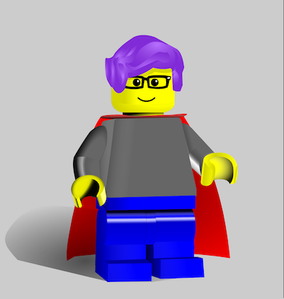

Share Your Feedback!

Site maintained by: legokate
Any thoughts you'd like to share? Let us know via email, Twitter, or Facebook!
- Email: contact@goodreads.com
- Twitter: @goodreads
- Facebook: /goodreads